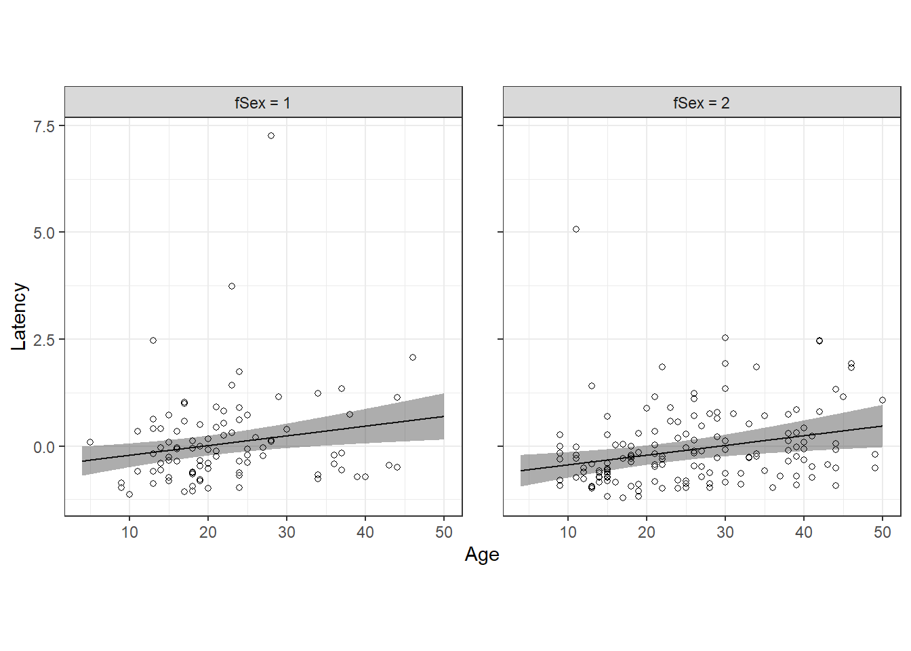
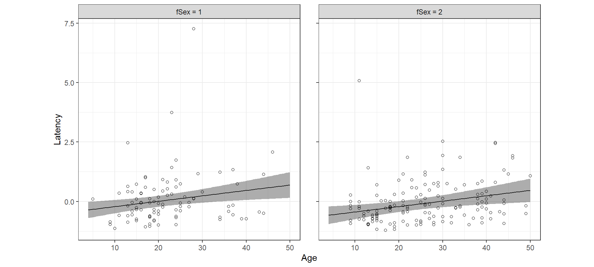

7 Multiple linear regression in R-INLA
本章では、時空間相関を持つモデルを実行する方法について学ぶ前に、よりシンプルなモデル(重回帰分析)をINLAパッケージで実行する方法やそこから予測値や残差を抽出したり、モデル診断やモデル選択を行う方法を学ぶ。
7.1 Introduction
本章では、チンパンジーの道具使用を調べた Hopkins et al. (2015) のデータを用いる。リサーチクエスチョンは、アリ釣りの技術が性別、年齢、生育環境で変わるのかである。
データでは、アリ釣りの技術は1回成功するまでの時間(潜時: Latency)で測定されている。計243個体の平均潜時を標準化した値がデータとして用いられている。また、説明変数は年齢Age、性別Sex、生育環境(rear; 1: 母親に育てられた、2: 人間に育てられた、3: 野生由来)、事件が実施された研究施設(Colony; 1か2)である。データは以下の通り。
chimp <- read_delim("data/Chimps.txt")
datatable(chimp,
options = list(scrollX = 20),
filter = "top")7.2 Data exploration
まずデータの確認を行う。図7.1は全ての変数のdotplot(Zuur 2012)を示したものである。平均潜時が大きい個体が2頭いる点に注意が必要である。 Hopkins et al. (2015) ではこれらは取り除かれたが、本章では入れて分析を行う。年齢は均等にばらついているように見える。
chimp %>%
select(Sex, Age, Z_Latency, Colony, rear) %>%
mutate(N = 1:n()) %>%
pivot_longer(1:5) %>%
ggplot(aes(x = value, y = N))+
geom_point()+
facet_rep_wrap(~name, repeat.tick.labels = TRUE, scales = "free_x")+
theme_bw()+
theme(aspect.ratio = 1)
図7.1: Cleveland dotplots of all the variables.
このデータには疑似反復はないように思える。各個体のデータは1つずつしかないし、時間的・空間的な相関が生じる要素もない。遺伝的な関連を考慮する必要があるかもしれないがここではひとまず扱わない。モデルに遺伝的な相関を取り入れる方法については、 Ga and Fox などを参照。
##Model formulation
以下のモデルを考える。なお、rearは3水準あるので2つの回帰係数のパラメータが推定される点は注意。
\[ \begin{aligned} &Latency_i \sim N(\mu_i, \sigma^2)\\ &E(Latency_i) = \mu_i \; \rm{and} \; var(Latency_i) = \sigma^2 \\ &\mu_i = \beta_1 + \beta_2 \times Age_i + \beta_3 \times Sex_i + \beta_4 \times Colony_i + \beta_5(\rm{and \; \beta_6}) \times rear_i \end{aligned} \]
7.3 Linear regression result
7.3.2 Output for betas
7.3.2.1 Numerical output for the betas
\(\sigma\)以外のパラメータの事後分布の情報は以下のとおりである。年齢の95%確信区間は0を含まないので、年齢は平均潜時に影響を与えているといえそう。そのほかの切片以外のパラメータは全て95%確信区間に0を含んでいる。
7.3.2.2 Graphical output for the betas
\(\beta_2\)の事後分布は以下のように図示できる。
beta2 <- m8_1$marginals.fixed$Age
beta2 %>%
data.frame() %>%
ggplot(aes(x = x, y = y))+
geom_area(fill = "lightblue")+
geom_line()+
theme_bw()+
theme(aspect.ratio = 1)+
labs(x = expression(beta[2]),
y = expression(paste("P( ", beta[2] ," | Data)")))
7.3.3 Output for hyperparameters
7.3.3.1 Numerical output for hyper parameters
ハイパーパラメータ\(\tau = 1/\sigma^2\)の事後分布の要約統計量は以下のように出せる。
しかしこれらは\(\tau\)についてのものであって、私たちが知りたいのは\(\sigma = 1/\sqrt\tau\)の事後分布である。\(\tau\)の期待値は以下のように書ける(第6.3節参照)。
\[ E(\tau) = \int_{-\infty}^{\infty} \tau \times p(\tau) d\tau \tag{7.1} \]
一方で、$= h() = 1/ \(とするとき、\)$の期待値は以下のようになる。
\[
E(\sigma) = \int_{-\infty}^{\infty} h(\tau) \times p(\tau) d\tau = \int_{0}^{\infty} \frac{1}{\sqrt{\tau}} \times p(\tau) d\tau \tag{7.2}
\]
これは、単純に\(\tau\)の事後分布の期待値を\(1/\sqrt{\tau}\)で変換しても、それは\(\sigma\)の期待値ではないことを示している。幸いなことに、INLAではこれを計算してくれる関数が用意されている。
tau <- m8_1$marginals.hyperpar$`Precision for the Gaussian observations`
sigma <- inla.emarginal(function(x) 1/sqrt(x), tau)
sigma## [1] 0.9767155確かにこの値は単純に\(\tau\)の事後分布の期待値を\(1/\sqrt{E(\tau)}\)で変換したものとは違う。
## [1] 0.9736711他の要約統計量が知りたい場合は、inla.tmarginalを用いればよい。
pmtau <- m8_1$marginals.hyperpar$`Precision for the Gaussian observations`
pm.sigma <- inla.tmarginal(function(x) sqrt(1/x), pmtau)
inla.zmarginal(pm.sigma)## Mean 0.9767
## Stdev 0.0445711
## Quantile 0.025 0.8939
## Quantile 0.25 0.945629
## Quantile 0.5 0.974946
## Quantile 0.75 1.00581
## Quantile 0.975 1.068947.3.3.2 Graphical output for the hyperparameters
\(\tau\)の事後分布は以下のように図示できる(図7.2のA)。ただし、これにはわずかに45ポイントのデータしか使用されていないので、少しカクカクしている。inla.smarginal関数を用いると、スプライン回帰によってよりスムーズにしてくれる(図7.2のB)。
pmtau %>%
data.frame() %>%
ggplot(aes(x = x, y = y))+
geom_area(fill = "lightblue")+
geom_line()+
theme_bw()+
theme(aspect.ratio = 1)+
labs(x = expression(tau),
y = expression(paste("P( ", tau ," | Data)")))+
labs(title = "A") -> p1
tau.smooth <- inla.smarginal(pmtau)
tau.smooth %>%
data.frame() %>%
ggplot(aes(x = x, y = y))+
geom_area(fill = "lightblue")+
geom_line()+
theme_bw()+
theme(aspect.ratio = 1)+
labs(x = expression(tau),
y = expression(paste("P( ", tau ," | Data)")))+
labs(title = "B") -> p2
p1 + p2
図7.2: Pusterior distribution of tau
7.3.4 Fitted model
推定されたパラメータの事後分布から、モデル式は以下のように書ける。
\[ \begin{aligned} &Latency_i \sim N(\mu_i, 0.97^2)\\ &E(Latency_i) = \mu_i \; \rm{and} \; var(Latency_i) = 0.97^2 \\ \\ &\rm{for \; chimpanzee \; of \; sex = 1, colony = 1, and \; rear = 1}\\ &\mu_i = -0.45 + 0.02 \times Age_i\\ \\ &\rm{for \; chimpanzee \; of \; sex = 2, colony = 2, and \; rear = 2}\\ &\mu_i = -0.45 + 0.02 \times Age_i -0.22 +0.09 + 0.05\\ & \;\;\; = -0.52 + 0.02 \times Age_i \end{aligned} \]
7.4 Model validation
前章で計算したように事後平均を用いた\(\mu_i\)の予測値を手動で計算することもできるが(6.8.1)、以下のように求めることもできる。fit8_1には予測値の95%確信区間も入っている。
予測値と残差の関係を示したのが図7.3である。明らかに残差が大きい点が2つある。
data.frame(fitted = fit8_1$mean,
resid = resid) %>%
ggplot(aes(x = fitted, y = resid))+
geom_point(shape = 1)+
theme_bw()+
theme(aspect.ratio = 1)+
geom_hline(yintercept = 0,
linetype = "dashed")+
labs(x = "Fitted values", y = "Residuals")
図7.3: Fitted vs residuals
予測値と実測値の関係を見ても、あまり当てはまりがよいように見えない。
data.frame(Latency = chimp$Z_Latency,
fitted = fit8_1$mean) %>%
ggplot(aes(x = fitted, y = Latency))+
geom_point(shape = 1)+
theme_bw()+
theme(aspect.ratio = 1)+
labs(x = "Fitted values", y = "Latency")
図7.4: Fitted vs residuals
予測値を手動で計算する方法は、リンク関数が恒等関数のときのみ正確な値になる。なぜなら、もしリンク関数で線形予測子を変換した後の期待値は線形予測子の期待値を変換するものと一致しないからである(式(7.1)と式(7.2)も参照)。
\[ E(h(x)) \neq h(E(x)) \]
7.5 Model selection
7.5.1 What should we do?
ベイズ統計でモデル選択を行うとき、話は通常の頻度論的な場合よりも複雑になる。以下では、ベイズモデリング(特にINLA)で用いることのできるモデル選択方法について議論する。
7.5.2 Usind the DIC
AIC(赤池情報量規準)はモデル選択の際に最も一般的な指標である。なお、\(L\)はパラメータが与えられたときのデータの尤度(e.g., \(P(D|\beta_1, \beta_2, \sigma)\))、\(k\)はパラメータ数である。\(log(L)\)は対数尤度、\(-2 \times log(L)\)は逸脱度(deviance)といわれる。共変量をたくさん入れればモデルの当てはまりはよくなるが(\(Lが高くなる\))、パラメータ数が増える(\(p\)が大きくなる)という関係が成り立っている。AICが低いほど「良い」モデルということになる。
\[ AIC = -2 \times log(L) + 2\times p \]
もし事前分布が無情報なのであればパラメータ数は知ることができるが、事前分布が情報を持っている場合、回帰係数がとりうる範囲は限定されるので、モデルの自由度やパラメータ数は変わってくる。すなわち、このような場合にはAICは適していない。
このようなときに使えるのがDICである。DICは\(\theta\)を全てのパラメータを含むベクトル、\(f(y|\theta)\)を尤度、\(D(\bar{\theta}) = -2 \times p(y|\bar{\theta})\)をパラメータの期待値6が与えられた時の逸脱度とするとき、以下のように定義される。
\[ DIC = D(\bar{\theta}) + 2 \times p_D \]
なお、\(p_D\)は有効パラメータ数と呼ばれるもので、事前分布が無情報に近づくとパラメータ数\(p\)と一致する。また、事後分布が無情報に近づくほど頻度論での最尤推定値がベイズ統計の事後分布の期待値と一致する。よって、事前分布が無情報であればAICとDICはほとんど一致する。
これを実際にRで確かめよう。
まず、AICは以下のようになる。
## 'log Lik.' -336.2983 (df=7)## [1] 686.5965続いて、INLAでDICも求める。control.computeオプションで、dic = TRUEとすればよい。INLAはデフォルトでは無情報事前分布が用いられている。
m8_1 <- inla(Z_Latency ~ Age + fSex + fColony + frear,
family = "gaussian",
data = chimp,
control.compute = list(dic = TRUE))
m8_1$dic$dic## [1] 686.6328AICとDICはほとんど一致する。
7.5.2.1 Effective number of parameters
有効パラメータ数の求め方には2つある。1つ目は以下の通り。なお、\(\bar{D}\)は逸脱度の平均を表す。
\[ p_D = \bar{D} - D(\bar{\theta}) \]
このとき、DICは以下のように書き直せる。
\[
\begin{aligned}
DIC &= D(\bar{\theta}) + 2 \times p_D \\
&= D(\bar{\theta}) + 2 \times (\bar{D} - D(\bar{\theta}))\\
&= \bar{D} + \bar{D} -D(\bar{\theta})\\
&= \bar{D} + p_D
\end{aligned}
\]
7.5.2.3 Model selection using DIC
それでは、実際にDICを比較してみる。先ほどのモデルから年齢以外の説明変数を1つずつ除いた以下のモデルを比較する。
m8_1b <- inla(Z_Latency ~ fSex + fColony + frear,
family = "gaussian",
data = chimp,
control.compute = list(dic = TRUE))
m8_1c <- inla(Z_Latency ~ Age + fSex + frear,
family = "gaussian",
data = chimp,
control.compute = list(dic = TRUE))
m8_1d <- inla(Z_Latency ~ Age + fSex + fColony,
family = "gaussian",
data = chimp,
control.compute = list(dic = TRUE))DICの結果、frearがないモデルが最もDICが低いことが分かった。
## [1] 686.6328 692.3986 685.0378 682.7590ここからは、さらにm8_1dから1つずつ説明変数を除いたモデルを作成し、DICが減少しなくなるまで同様の比較を続ける。
m8_1e <- m8_1 <- inla(Z_Latency ~ Age + fColony,
family = "gaussian",
data = chimp,
control.compute = list(dic = TRUE))
m8_1f <- m8_1 <- inla(Z_Latency ~ Age + fSex,
family = "gaussian",
data = chimp,
control.compute = list(dic = TRUE))m8_1dより、そこからfColonyを除いたモデルのDICの方が低い。
## [1] 682.7590 683.7640 681.4553さらにm8_1fからfSexを除いたモデルと比較する。
m8_1g <- m8_1 <- inla(Z_Latency ~ Age,
family = "gaussian",
data = chimp,
control.compute = list(dic = TRUE))最終的に、m8_1fが最もDICが低いことが分かった。
## [1] 681.4553 682.06257.5.3 WAIC
DICのほかには、WAIC(widely applicable information criterion)を使うこともできる。WAICはDICをより発展させたものととらえられる。WAICの解説については、 McElreath (2020) も参照。
INLAでは以下のようにして計算できる。
m8_1 <- inla(Z_Latency ~ Age + fSex + fColony + frear,
family = "gaussian",
data = chimp,
control.compute = list(waic = TRUE))
m8_1$waic$waic## [1] 696.2957.5.4 Out of sample prediction
最後に、DICやWAICのような情報量規準ではなく、交差検証(cross validation)と呼ばれる方法を用いることもできる。この方法では、例えばデータをらなダムに2つ(\(D_{fit}\)と\(D_{pred}\))に分ける。その後\(D_{fit}\)に対してあるモデルを当てはめ、その結果をもとに\(D_{fit}\)の予測を行う。以上を何度も繰り返し、それらを総合してそのモデルの精度を評価する。これを複数のモデルに対して行い、そのモデルが最も良いかを調べるのが交差検証である。
INLAでも交差検証を行う。INLAでは、\(D_{fit}\)を1つだけの観測値を除いたデータとし、これを全ての観測値に対して行う交差検証を行う。これは”leave one out” 交差検証と呼ばれる。INLAは交差検証によってCPO(conditional predictive ordinate)やPIT(probability integral transform)と呼ばれる値を算出する。
CPOは、除かれた1つの観測値が、その他の観測値が与えられたときに得られる確率として定義される。\(CPO_i\)が高いほど他のデータを用いて推定されたモデルに従うことを示す。
\[
CPO_i = Pr(除かれた観測値_i|そのほかの観測値)
\]
PITはCPOの代替的な指標である。説明はこちらや Blangiardo and Cameletti (2015) に詳しい。
INLAでは\(CPO_i\)を以下のように算出できる。
m8_3 <- inla(Z_Latency ~ Age + fSex + fColony + frear,
family = "gaussian",
data = chimp,
control.compute = list(cpo = TRUE))以下のm8_3$cpoには3つのリストが含まれる。m8_3$cpo$cpoは\(CPO_i\)が、m8_3$cpo$pitは\(PIT_i\)がデータ数だけ含まれる。3つめのm3_8$cpo$failureはもし1であればその観測値のCPOやPITが信頼できないことを表す。
CPOのdotplotを図示すると以下のようになる。それも低い値をとっており、モデルの当てはまりがよくないことが分かる。
m8_3$cpo %>%
data.frame() %>%
mutate(n = 1:n()) %>%
ggplot(aes(x = cpo, y = n))+
geom_point()+
coord_cartesian(xlim = c(0,1))+
theme_bw()+
theme(aspect.ratio = 1)+
labs(x = "CPO", y = "Observation number")
モデル選択では、様々なモデルに対して同様にCPOを算出し、どのモデルがよりよく当てはまっているかを比べる。しかし実際にこれを基に判断するのは難しい。他の方法としては、モデルごとに\(CPO_i\)を1つの値にまとめ、それをモデル間で比較するというものである。例えば、\(log(CPO_i)\)の合計をそのモデルの当てはまりの良さとして使用することができる。
## [1] -347.82947.5.5 Posterior predictive check
モデルの当てはまりをチェックする方法としては、モデルから事後予測分布を算出するというものである。事後予測分布は、モデルから推定された事後分布をもとに新たにデータを生成したときに、新たに得られるデータの予測分布のことである。INLAでは以下のようにして容易に事後予測分布を計算できる。
m8_4 <- inla(Z_Latency ~ Age + fSex + fColony + frear,
family = "gaussian",
data = chimp,
control.predictor = list(compute = TRUE),
control.compute = list(return.marginals.predictor=TRUE))例えば、1頭目のチンパンジーの平均潜時の事後予測分布は以下のようになる。実測値を黒い点で示した。
m8_4$marginals.fitted.values[[1]] %>%
data.frame() %>%
ggplot(aes(x = x, y = y))+
geom_area(fill = "lightblue")+
geom_line()+
geom_point(data = chimp %>% .[1,],
aes(x = Z_Latency, y = 0),
size = 4.5)+
theme_bw()+
theme(aspect.ratio = 1)+
labs(x = "Latency scores of chimp 1",
y = "Density")
全観測値について95%予測区間(事後予測分布の95%区間)と観測値の関係を示したのが以下の図である。実測値が95%予測区間に入ってないものがかなり多くあることが分かる。このことは、このモデルから実際のデータが得られたとは言いにくいということを示している。
postpre8_4 <- m8_4$marginals.fitted.values
postpre_all <- data.frame()
for(i in 1:nrow(chimp)){
summary_i <- inla.qmarginal(c(0.025, 0.5, 0.975), postpre8_4[[i]]) %>%
data.frame() %>%
rename(value = 1) %>%
mutate(col = c("q2.5","q50", "q97.5")) %>%
pivot_wider(names_from = col, values_from = value) %>%
mutate(id = i)
postpre_all <- bind_rows(postpre_all, summary_i)
}
postpre_all %>%
mutate(id2 = c(rep("1~61",61),rep("62~122",61), rep("123~183",61), rep("184~243",60))) %>%
ggplot(aes(x = id))+
geom_errorbar(aes(ymin = q2.5, ymax = q97.5))+
geom_point(data = chimp %>% mutate(id = 1:n(),
id2 = c(rep("1~61",61),rep("62~122",61), rep("123~183",61), rep("184~243",60))),
aes(x = id, y = Z_Latency),
size = 1)+
theme(aspect.ratio = 0.5)+
facet_rep_wrap(~id2, repeat.tick.labels = TRUE,
scales = "free")
事後予測分布をもとにモデルの当てはまりを評価するために、事後予測p値という値が考えられているようだ。これは、事後予測分布が実測値よりも小さい値をとる確率\(Pr(Latency_i^* \le Latency_i|D)\)で定義される。なお、\(Latency_i^*\)は事後予測分布の値である。事後予測p値が0や1に近い値が多いならば、このモデルの当てはまりは悪いということになる。
では、実際に算出してみる。図示すると、やはり0や1に近い値が多くてモデルの当てはまりが悪いことが分かる。
pval <- rep(NA, nrow(chimp))
for(i in 1:nrow(chimp)){
pval[i] <- inla.pmarginal(q = chimp$Z_Latency[[i]],
marginal = postpre8_4[[i]])
}
data.frame(pval = pval) %>%
ggplot()+
geom_histogram(aes(x = pval),
bins = 20,
alpha = 0,
color = "black")+
theme_bw()+
theme(aspect.ratio = 1)+
scale_x_continuous(breaks = seq(0,1,0.1))
7.6 Visualizing the model
最後に、モデルの予測値とその95%確信区間をデータ上に可視化する。
lm関数を用いた重回帰分析ではこれがかなり簡単に行える。例えば、fColony = 1、frear = 1のときの予測値とその95%信頼区間は以下のように描ける。
fit8_2 <- ggpredict(m8_2,
terms = c("Age[4:50,by = 0.1]","fSex"),
condition = c(fColony = "1", frear = "1"))
fit8_2 %>%
data.frame() %>%
rename(Age = x, fSex = group) %>%
mutate(fSex = str_c("fSex = ",fSex)) %>%
ggplot(aes(x = Age, y = predicted))+
geom_line()+
geom_ribbon(aes(ymin = conf.low, ymax = conf.high),
alpha = 0.4)+
geom_point(data = chimp %>% mutate(fSex = str_c("fSex = ",fSex)),
aes(y = Z_Latency),
shape = 1)+
facet_rep_wrap(~fSex)+
theme_bw()+
theme(aspect.ratio = 1)+
labs(y = "Latency")
INLAで同様のグラフを95%確信区間で書く方法は2つある。そのうち1つをここで紹介する(もう一つは第??章で紹介する)。
この方法は少しトリッキーだがうまくいく。まず、予測値を求めたい範囲のデータを格納し、かつZ_Latency = NAのデータフレームを作成する。
newdata <- crossing(Z_Latency = NA,
Age = seq(4,50,length = 100),
fSex = c("1","2"),
fColony = "1",
frear = "1")これをもとのデータにくっつけてモデルを実行すると、パラメータの推定自体に影響はないが、先ほどnewdataで指定した範囲についても予測値を算出することができる。
chimp2 <- bind_rows(chimp, newdata)
m8_5 <- inla(Z_Latency ~ Age + fSex + fColony + frear,
family = "gaussian",
data = chimp2,
control.predictor = list(compute = TRUE),
control.compute = list(return.marginals.predictor=TRUE))確信区間等を算出し、244番目以降のデータについて抽出すればnewdataで指定したデータについての予測値と95%確信区間が得られる。図示した結果は頻度論の結果とほぼ変わらない。
fit8_5 <- m8_5$summary.fitted.values[244:443,] %>%
bind_cols(newdata)
fit8_5 %>%
mutate(fSex = str_c("fSex = ",fSex)) %>%
ggplot(aes(x = Age, y = mean))+
geom_line()+
geom_ribbon(aes(ymin = `0.025quant`, ymax = `0.975quant`),
alpha = 0.4)+
geom_point(data = chimp %>% mutate(fSex = str_c("fSex = ",fSex)),
aes(y = Z_Latency),
shape = 1)+
facet_rep_wrap(~fSex)+
theme_bw()+
theme(aspect.ratio = 1)+
labs(y = "Latency")
References
INLAでは、回帰係数\(\beta\)については事後分布の期待値(平均)、ハイパーパラメータについては事後分布の最頻値(モード)がDICの計算に使用される。↩︎